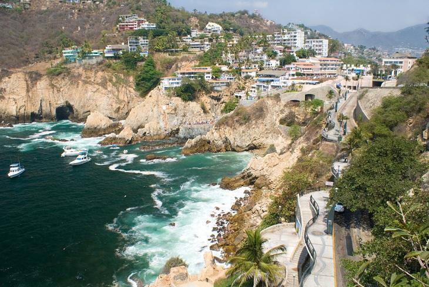

ACAPULCO
Sobre Acapulco
Um dos destinos turísticos mais procurados por brasileiros e outros latino americanos, Acapulco destaca-se pela irradiante beleza de suas praias, lagoas, falésias, pelos excelentes hoteis e, sem deixar de mencionar, a habitual alegria e receptividade do povo mexicano.
A cidade situada no estado de Guerrero, que fica no sudoeste do país, é recomendada sobretudo para aqueles viajantes que desejam se afastar do estresse de grandes centros urbanos e aproveitar o sol intenso e muito agito.
Os passeios por Acapulco também podem ir além da natureza, porque a cidade tem relevância histórica como tantas outras mexicanas. Depois de uma manhã e tarde ensolarada em uma praia movimentada como a da imagem acima, é uma boa ideia ir, por exemplo, ao Forte de São Diego, localizado no centro histórico da cidade.
Um dos mais solicitados atrativos turísticos de Acapulco é um penhasco conhecido como La Quebrada. O calçadão coloca o visitante em contato com as graciosas rochas do litoral, a vegetação exuberante e o mar, que se aproxima perigosamente da parte mais baixa do penhasco.
Preço e Condições
Este pacote de viagem de 20 diasinlcui hotel, alimentação, translado e passeios turísticos!
POR INCRÍVEIS R$ 19.999,99